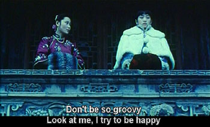

Don't be so groovy
MrLittlePants and I watched the recent DVD release of Raise the Red Lantern last night. He had seen it some time ago, but I was a red lantern virgin.

The quality was shockingly bad. We thought at the beginning that it was some kind of ironic Quentin Tarantino treatment, but eventually realized we were in for two hours of scratchy video.
Wow! I had forgotten such a thing was possible. Other DVD transfers I’ve seen have been flawless, all the way back to Sorry, Wrong Number. And of course any Chinese movie since Crouching Tiger has nary a flickering frame in it.
Is there really no better copy of this 1991 Oscar-nominated movie in the whole world? Did the Chinese government burn them all? I didn’t mind it too much (and still enjoyed the movie), but it’s hard to understand how such a widely respected work hasn’t been treated better.
The English in the subtitles was just as tattered as the video, often hilariously. Our favorite line: * “Don’t be so groovy / Look at me, I try to be happy.” *
This should be set to music, made into tee-shirts, and - obviously - spread around the Web. So far, Google only knows of one reference to “don’t be so groovy,” one that astoundingly attests to its correctness.
Before the second world war, however-
and this is verifiable in novels of the period-[groovy] meant “stuck in a groove”, with old-fashioned people instructed: “Don’t be so groovy.”
Silly me, I had assumed they meant to type “gloomy.” Turns out they were just working with a fifty year old copy of English.
Backtalk
I thought “moody,” but gloomy makes more sense. It’s too bad that such a beautiful movie has been given the B-movie treatment.
that is one of my favorite movies, but i believe i watched it on VHS.
Add a comment